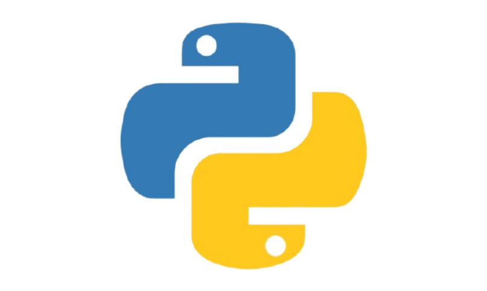

Al adentrarme en el análisis de las herramientas informáticas, entiendo el software de programación como el conjunto de utilidades y aplicaciones especializadas que permiten a los desarrolladores crear, depurar, mantener y estructurar otros programas o sistemas opeativos. No se trata de software de uso final para el usuario común, sino de un entorno de herramientas diseñado especificamente para traducir la lógica humana en instrucciones que el hardware de una computadora pueda comprender y ejecutar de forma eficiente.
Este tipo de software se divide en componentes clave que trabajan en cadena. En primer lugar, encontramos los Editores de Código, que proveen una interfaz con marcado sintáctico para escribir las líneas de código fuente. En segndo lugar están los Copiladores e Interpretes, que actúan como traductores de alto nivel: los copiladores convierten todo el código fuente en un archivo binario ejecutable de una sola vez, mientras que los intérpreters traducen y ejecutan el código línea por línea en tiempo real. Finalmente, la integración de estas herramientas junto con depuradores (debuggers) y gestores de dependencias da vida a los Entornos de Desarrollo Integrados (IDE), los cuales centralizan todo ciclo de vida del software en una sola aplicación para maximizar la productividad del programador.


Un escenario sumamente claro y propio de nuestro día a día en la carrera ocurre cuando desarrollamos una aplicación web interactiva o un script de automatización y utilizamos un IDE moderno como Visual Studio Code.
Fase de Escritura: Escribimos las funciones y algoritmos en el editor. El software de programación nos ayuda en tiempo ral mediante el autocompletado de código (InterlliSense),detectando errores de sintaxis (como un punto y coma faltante o una variable mal declarada) antes de ejecutar el programa.
Fase de Depuración (Debugging): Si el programa compila pero lanza un resultado erróneo, utilizamos el depurador integrado del software para colocar "puntos de interrupción" (breakpoints). Esto nos permite pausar la ejecución del código línea por línea, observar el valor que toman las variables de memoria RAM y detectar exactamente en qué parte de la lógica se encuentra la falla del sistema.
Este entorno representa un escenario práctico ideal porque demuestra cóm el software de programación optimiza el tiempo de desarrollo de un ingeniero. Sin estas herramientas especializadas, tendríamos que escribir el código en un editor de texto plano (como el Bloc de Notas), abrir una terminal de comandos independiente para copilarlo manualmente y adivinar la ubicación de los errores de memoria, lo cual volvería ineficiente el proceso de creación de sistemas de cómputo.
Reflexión Personal
¿Por qué elegí este tema?
Elegí profundizar en el software de programación porque lo considero el canal fundamental que da sentido a nuestra carrera. El hardware por sí solo es únicamente silicio y circuitos eléctricos inanimados; es a través del software de programación que los ingenieros en sistemas tenemos el poder de darle órdenes a las máquinas para resolver problemas reales del mundo actual. Me fascina cómo una herramienta bien diseñada puede transformar ideas abstractas y algoritmos lógicos en aplicaciones funcionales que impactan la vida de las personas.
¿Dónde se aplica?
A nivel profesional, el software de programación se aplica en absolutamente todas las industrias que dependen de la tecnología actual. Es la herramienta principal que utilizan los equipos de ingeniería en empresas como Google, Microsoft o firmas locales para el Desarrollo de Software Comercial y Aplicaciones Móviles. Tambien se aplica de maenera crítica en el área de Sistemas Embebidods y Automatización, donde se programan microcontroladores para maquinaria industrial, dispositivos médicos y sistemas automotrices, demostrando que cualquier avance tecnológico requiere obligatoriamente de un software de programación para ser creado.